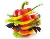

| Datum | Gericht 1 | Gericht 2 | Gericht 3 |
|---|
| 04.02.2013 | Pfannkuchen mit Kirschen | Moussaka | Truthahn in Estragonsauce mit Reis |
| 05.02.2013 | Bunte Gemuesepfanne | Penne mit Pesto Rosso | Truthahn mit Blumenkohl |
| 06.02.2013 | Pangasiusfilet mit Kartoffelstampf | Toast Hawaii | Birnenmilchreis |
| 07.02.2013 | Penne Arrabiata Vegetarisch | Pilzravioli mit Sauce Hollandaise | Rindergeschnetzeltes mit Reis |
| 08.02.2013 | Bohneneintopf Mexiko | Spinat mit Kartoffeln und Ei | Italienische Gemuesepfanne mit Haehnchen |
| 11.02.2013 | Spaghetti Bolognese | Chickenburger | Penne mit Pesto Verde |
| 12.02.2013 | Penne mit Spinatsauce | Gnocchipfanne | Schweinefilet Avantgarde |
| 13.02.2013 | Tofu-Reispfanne | Gyros mit Pommes | Spaghetti Aglio e Olio |
| 14.02.2013 | Haehnchenbrust in Salbeisauce m. Reis | Toast Italiano | Gebackener Camembert |
| 15.02.2013 | Raclette | Forelle Muellerin Art | Elcheintopf |
| 18.02.2013 | Cordon Bleu mit Kartoffeln | Penne Arrabiata mit Speck | Omelette mit Kartoffeln |
| 19.02.2013 | Nudelsuppe | Schokoladenfondue | Huehner-Nudel-Auflauf |
| 20.02.2013 | Chili con carne | Gemuesebratling mit Curryreis | Frittierte Mozzarellakugeln in Gorgonzolasauce |
| 21.02.2013 | Rouladen mit Rotkohl und Kartoffeln | Lachs Suess-Sauer | Belgische Pommes Rot-Weiss |
| 22.02.2013 | Seelachs mit Kartoffel-Knusperkruste | Pizza Hawaii | Gnocchi mit Tomatensauce |